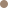
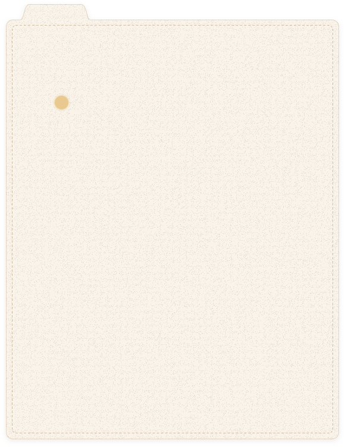
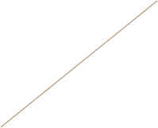
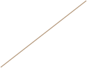
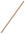
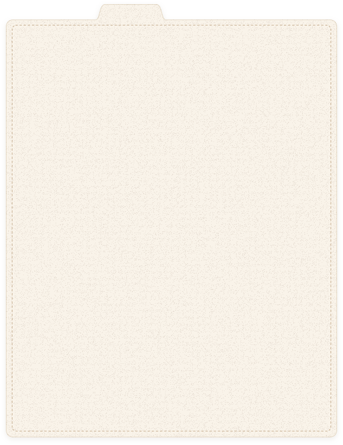
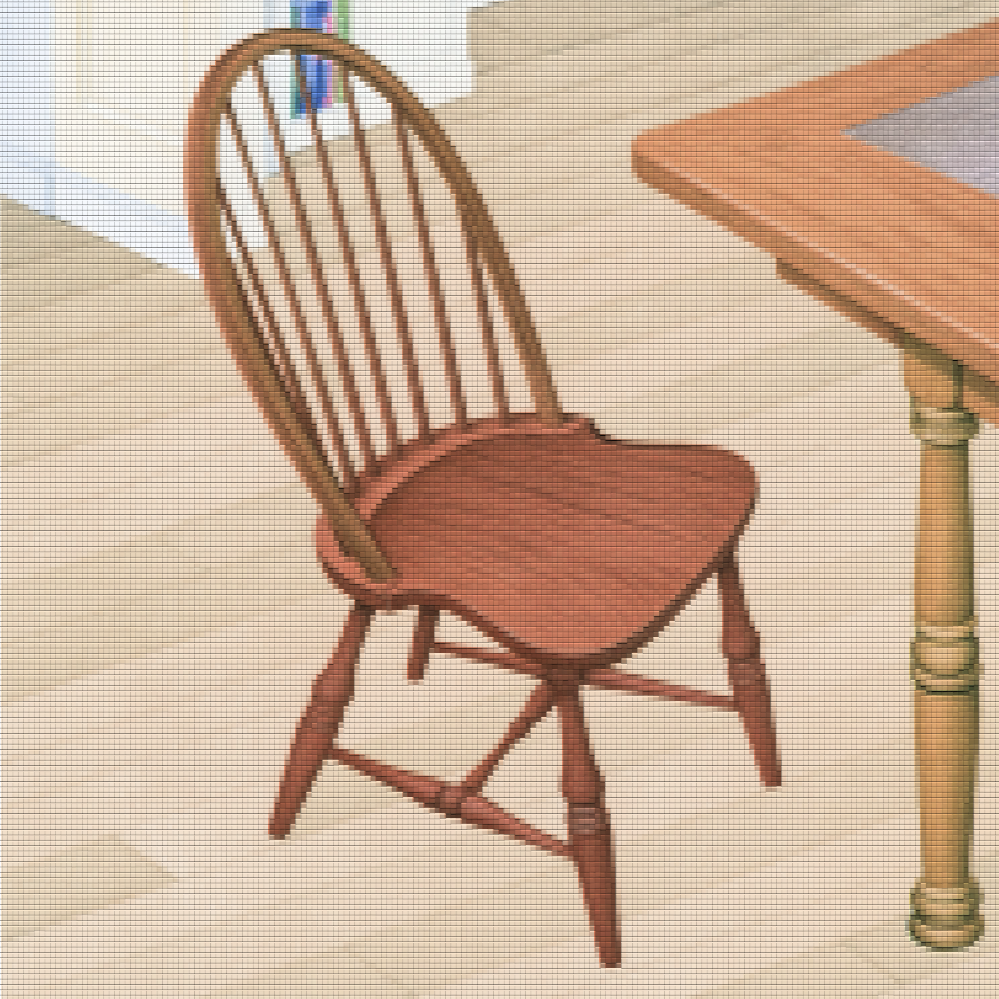

Providence Athenæum · est. 1836
A Field Guide to Comfort
Why does this library
feel like home?
Open a divider to find the quiet details
that make the Athenæum comforting.
Each divider is one reason the library feels comforting.

108 objects · 4 dividersA Field Guide to Comfort

I · Lighting
Pick a light from the library
Warm lamp light
Drag the dot to change the light. The room follows, and the places with this light are labeled.
1Reading lamp

2Card catalogue
3Desk lamp
4Gallery sconceA Field Guide to Comfort

II · Furniture · No. 014
Wooden chair

- 1Round back that wraps around youCurve
- 2Warm wood, like the floor and tablesMaterial
- 3Scratches from years of useTrace
Why it feels comforting?
The bent back curves around your shoulders, and the seat dips to fit your body. Its honey-colored wood matches the floor and tables around it, and the scratches on the seat show it has been sat in for years, so it feels familiar, not new.
1 of 24 pieces
1Wooden chair · 014